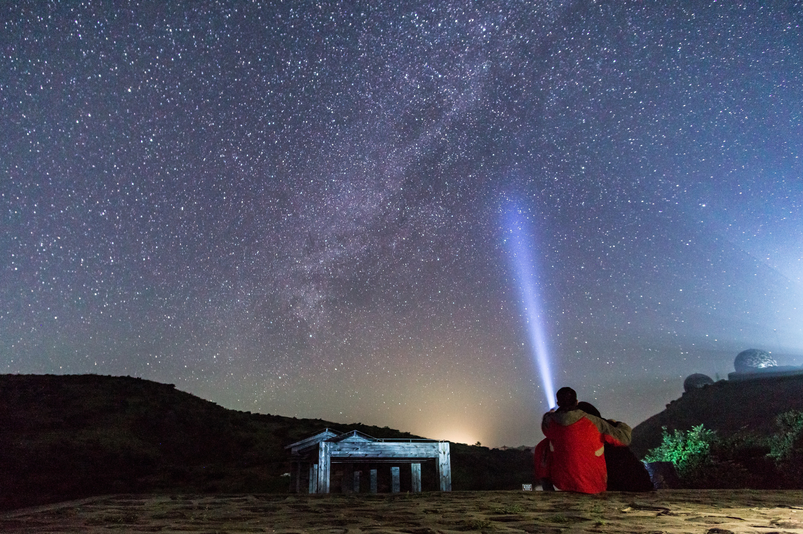
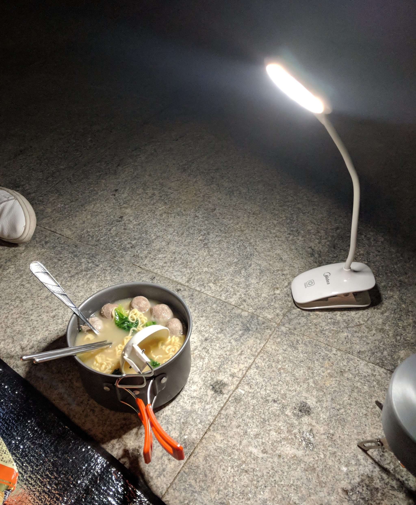
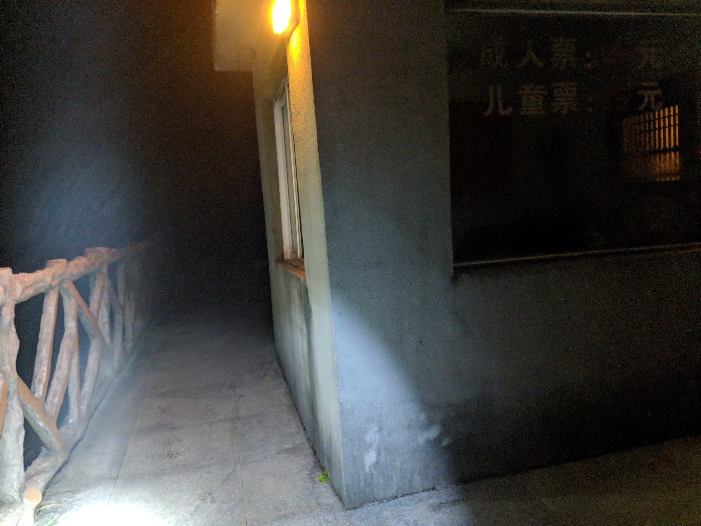
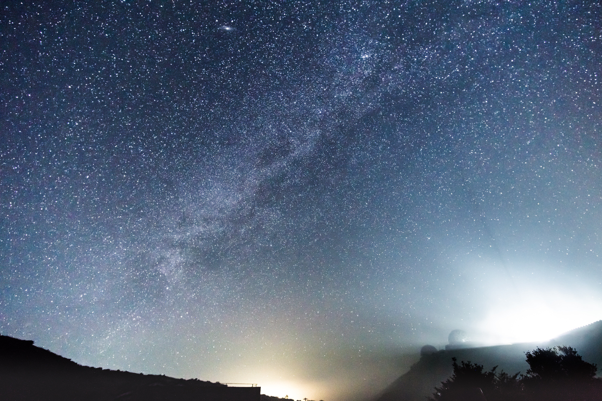
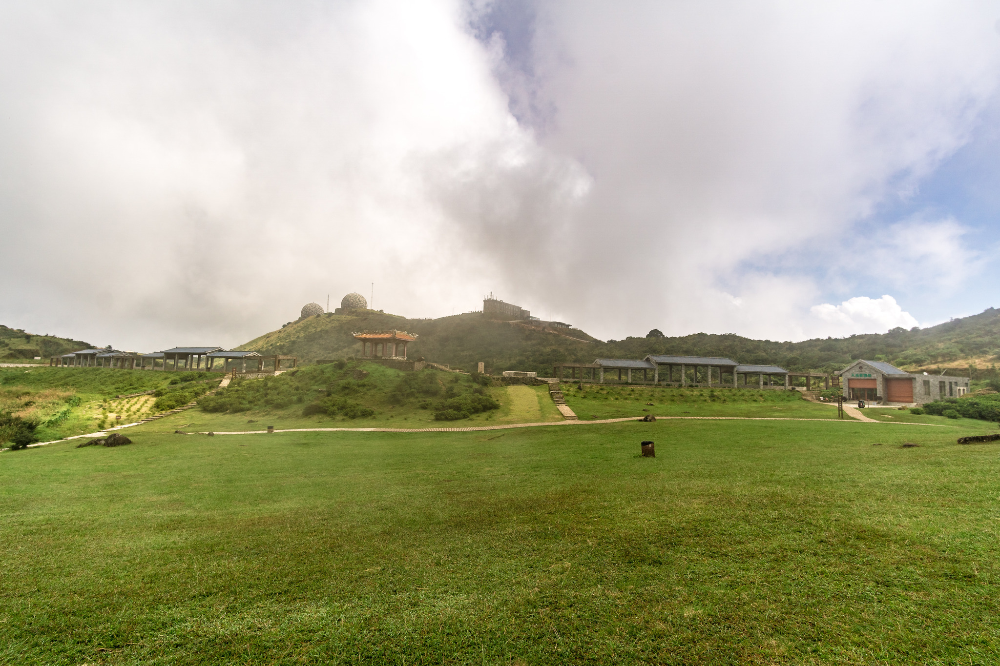
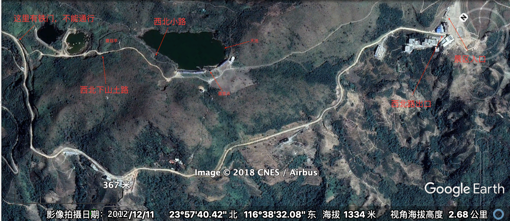
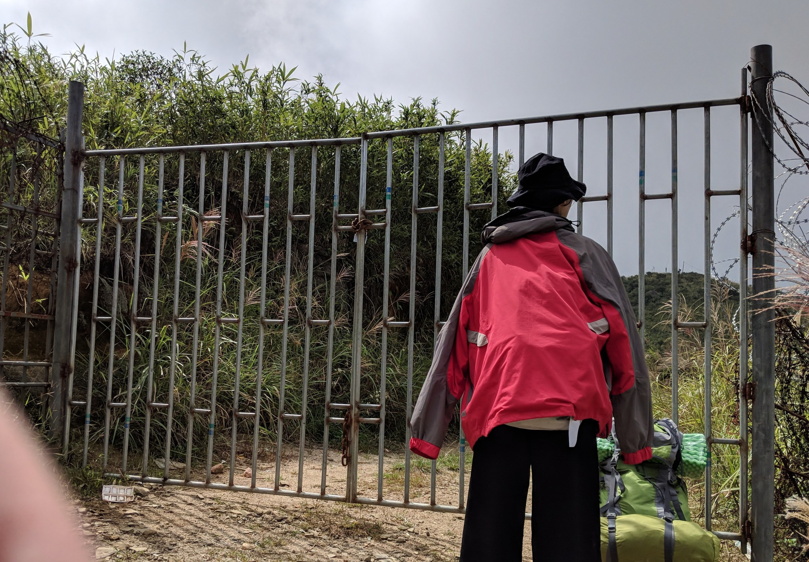

20 号夜 6 点半从汕头市区出发夜骑凤凰山。19：17 到达樟林，335 省道莲华段的路况不是太好，路窄大车多，水泥路面多处破裂，50左右速度过一处不平路面时，这次颠簸感觉到前轮有被『蛇咬』的可能性，一路有点担心爆胎。到意东镇后，想到接下来要离开市区，靠边停车检查一下车况，发现前轮胎压不足。开始有点担心是不是破胎泄气，不过想到前轮上次打气不知道是什么时候，起码得一年以上，说不定买车就没打过（😎）。还是自然泄气的可能性大一点。刚好前方不远意东三路和北桥路红灯路口有一家新本店，便跑去打了气，店主人不错也没收钱，检查了下没什么问题就继续出发了，准备开一段再看看胎压，最坏情况就在凤凰山住宿。摩托车胎没有公路车胎那么矫情（事实证明磕了一下没影响，车在山上停了一夜气还是饱的）
过了文祠镇就是山路了，山路基本没有路灯，一路远光，会车自觉关灯，但迎面来的汽车能做到自觉关灯不到三成，痛恨不已，遇到不关灯，为了避免会车后的短暂失明，只能低头减速。有一处一边路面修路封掉，迎面来的汽车还不关灯，简直是谋杀，幸好速度足够低才能避免这些危险。不过这段路还是得花多白天一倍的时间。
大概 9 点到凤凰镇，在 201 乡道停留休息了一下，开始走老路上山。晚上走老路还是很有挑战性的，而且快到凤溪水库那边，摩托车开始出现异响（往右压弯会出现），虽然大概知道是链条太松了，不过听着还是很紧张。爬升高一点开始有雾，当晚本来有月的（八月十一），不过在云里开车，能见度很差，有几次拐弯，以为弯道要完了结果还没有，只能急忙刹车减速。还有一次以为车辆要失控了，还用脚踩一下地面保持平衡。后面就不敢分神和后面那位叨叨，精神高度集中，老路两边有不少房子，山上人家大多早早休息。到了乌崬村左拐往天池方向的时候，摩托车刚好开到云上面，豁然开朗，满天繁星，月光下周围是望不到边际的云海，不远处的山峰耸立在云海上方，夜幕下显得壮观又可怖。因为时间太晚，又快到顶了，便没有停车拍照，实在可惜，10点左右到天池入口停车场时刚停好车云雾又来了。
准备收拾东西爬天池的时候，发现居然忘了带水袋，列好了清单事无巨细，一件件打钩就是忘了把水袋放进书包里，10 点的停车场售票处都已没有人，绕了一圈找不到商铺或者装水的容器。有点不知所措，既然没带水袋，那就灵活变通将错就错。解决晚餐再上去。直接在景区门口铺上防潮垫，席地而坐。地面平，离公厕近，接水洗锅都方便。

吃完刷了牙，带上头灯继续上路，售票处没有人，门还留了条通道，直接就逃票上去了。其实就算门没关还是可以从售票处后边绕过去的。这里到天池大概是 1200m，在800m、200m 处都有路牌提示。全程石梯和围栏，雾非常浓，大功率头灯也照不清2米外，慢慢走十几二十分钟就能到天池，总的来说不算陡，地图上看爬升大概 130m。

爬上去就看到雾里有亮光，随着灯光走过去，原来是另一伙露营的人。几男几女，两个帐篷。他们在走廊下露营，打了下招呼，就继续沿着走廊走。就在过了亭后的平地，抵着两个石头的地方搭起帐篷。因为雾太重不敢乱走，人也太累，心念念的薯片都没吃就躺下了。这个帐篷位置选的实在不好，离那伙人太近，他们一晚上都在聊天，在天池里抓鱼还大声嚷嚷。4 点多的时候又有一伙人在亭里休息喝茶聊天。基本一夜都没睡好。不过，幸好没睡好。3点出头的时候，听到他们沸腾起来，喊着看星星。
打开帐篷一看，雾都散开了。满天繁星，无一点云，实在美妙。还看到几颗流星。连忙叫起同伴，起来看星星，拍几张纪念照，总算不枉此行。没带脚架很难找角度，军事中心的灯光污染了一部分天区。时间有限，准备不足所以照片都是纪念照。没多久，雾又来了。安心躺下休息了。

5点多起来看了下又都是雾，实在太困，就不去碰运气看日出了。云海和雾真的是一线之间。这个时间段没有人来，只有远处几个摘茶工聊天的声音，终于能安安静静睡一觉了。 不过到七点多睡不下去了，就起来刷牙吃早餐。原来天池也是有厕所的，就在露营点走一段楼梯就到了。而且前面就是一大片草地，早上雾散了终于看清楚，昨晚这个营点选的实在不好。吃完早餐吃零食喝茶聊天。9点出头就收拾东西，到处逛逛。

回程准备去探探西北方向的路。顺便去那边的天子洞之类的景点。9点多的太阳实在是毒辣，沿着天池边走一段小路，左手边还有两个池塘，经过两个亭，在军事雷达下方的那个亭休息了会，看似路程还很远，似乎与回程的路线不通，太阳又毒辣，便决定往回走，到蘑菇亭方向的小路往上走，便是西北方向下山的路。
路是普通的山路，碎石比较多。走到尽头出大路的时候被一个铁门锁住了，两边还围了铁丝网。不过这个铁门轻易就翻过去。大路也是山土路，能通车。全程遇到过两辆车，不过长了很多，得两倍景区路线的距离，地图上测距大概 2 公里，不过还算好走，11点前顺利达到停车场。快点停车场的时候我以为出口的路也被封了，吓死了。便放下行李和同伴先去探探路，幸好是看错了，将错就错直接开摩托回来接同伴。
 
下山的时候又想碰碰运气，便走了新路，新路有路牌写明不允许摩托车行驶，酒店那里有设卡，不过大中午没有人，而且还留有一个摩托车可过的通道，我就不管直接通过了。快到凤凰镇的时候也有一个卡口，不过同样留有一个摩托车可通过的卡口，还有保安。自然镇定慢速通过，没有什么事，最后顺利到达凤凰镇，走新路下山果然快很多，慢速安全驾驶也只需半小时不到。白天开车也快很多。11点从天池停车场下来，1 点就到樟林。结束了19个小时的凤凰山之旅。

写一篇流水账记录，给自己以后也给有需要的朋友一些参考，客观上也透露了一些逃票的参考信息，并不是我鼓励逃票，如果可以还请花钱买票支持当地的旅游业和环境保护。不过对于中国景区的私人经营、收费过高、商业化运作过重的问题，也是深痛恶绝（并非指天池），所以对于逃票行为也是只能不予置评了。